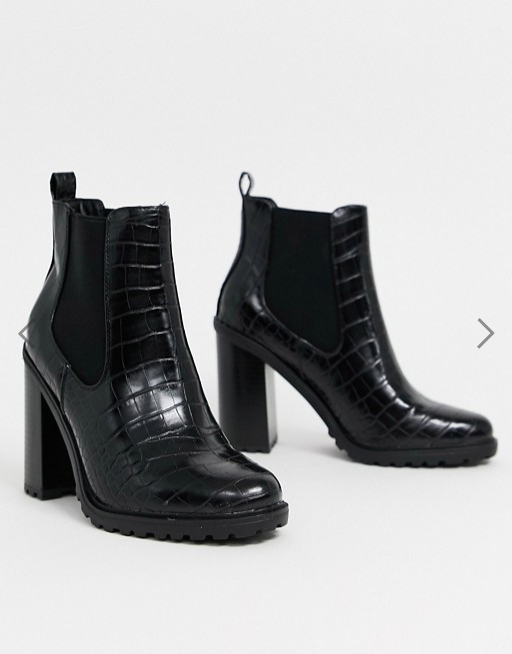
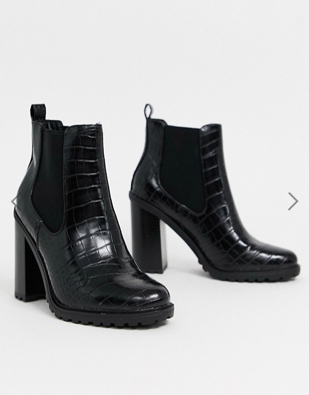

klik op de afbeeldigen voor de reviews
ASOS is een Britse online mode- en cosmetische retailer. Het bedrijf werd opgericht in 2000 in Londen, voornamelijk gericht op jonge volwassenen. De website verkoopt meer dan 850 merken, evenals een eigen assortiment kleding en accessoires, en wordt naar alle 196 landen verzonden vanuit fulfilmentcentra in het VK, de VS en de EU.
ASOS stond oorspronkelijk voor AsSeenOnScreen met de slogan "Koop wat je op film en tv ziet" omdat het exclusief imitaties van kleding van die media verkocht (bijvoorbeeld het rode leren jack van Brad Pitt uit de film Fight uit 1999 Club ). Het heeft echter niet langer die betekenis en is over het algemeen gestileerd als een acroniem in hoofdletters, hoewel het bedrijfslogo het in kleine letters weergeeft.
Het hoofdkantoor van ASOS bevindt zich in Camden Town , in Greater London House, met extra kantoren in Parijs, New York, Berlijn en Birmingham. Vanaf 2013 is hun belangrijkste fulfilmentcentrum in Barnsley , South Yorkshire , waar ze 3.500 werknemers in dienst hebben. De klantenservice is gevestigd in Leavesden , nabij Watford , in het zuidwesten van Hertfordshire.